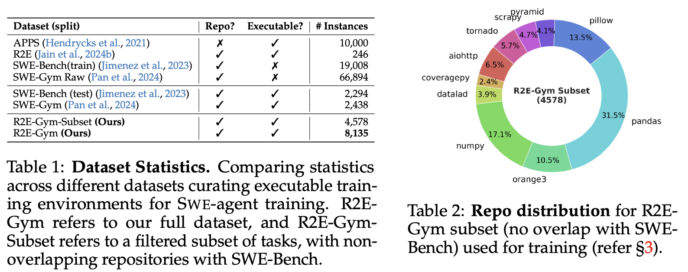
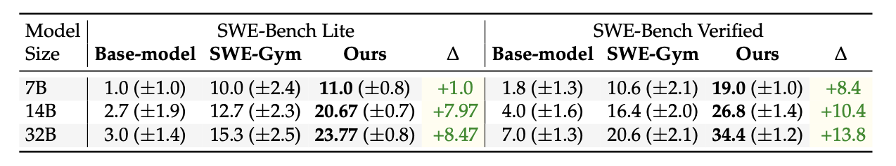
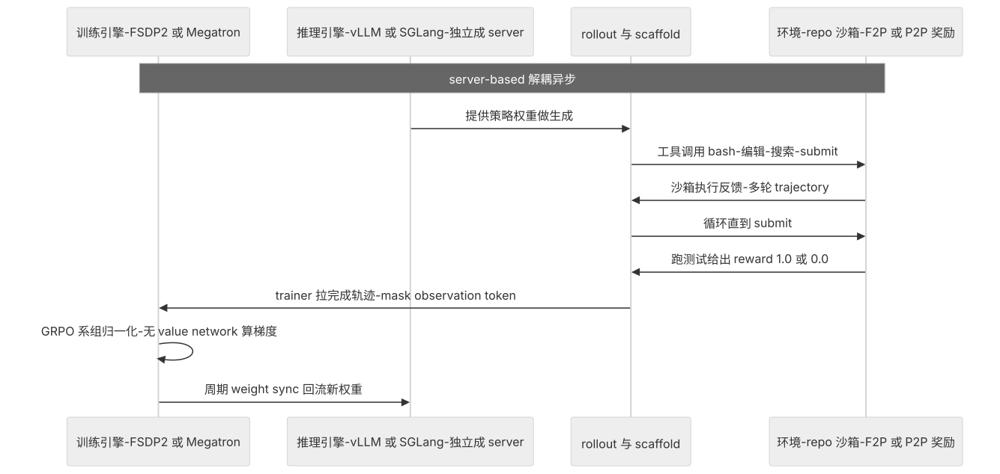

00全景与读法
SWE agent 子领域可以拆成四件事互相咬合：评测（任务长什么样、怎么打分）、脚手架（模型外面的控制循环和工具）、训练数据（怎么大规模造出可执行验证的任务）、agentic RL（用可验证奖励 RLVR 把模型训上去）。四件事共用一个任务格式——F2P（Fail-to-Pass）：理解了这一格式就理解了整个生态。原文由 6 个并行子 agent 调研加 1 个综合 agent 汇总产出，链接与 arXiv ID 为调研所得，部分前沿与厂商数字为 provisional，以原始来源为准。
每一节固定三段：叙事怎么说（左栏，灰：社区或厂商的常见表述）/ 证据是什么（右栏，橙：原文核实到的机制与数字）/ 本站判断（下方色块：差异、原文是否给了理由、对 RL-on-NPU 的含义）。数字按来源标注：第三方 独立测量或论文口径、自报 厂商或作者口径、推断 本站分析。原文标为"暂定 / provisional"的数字一律保留限定语。
贯穿全文的一条线索：SWE-bench 分数是"模型 × scaffold × harness"三者的联合产物，不是模型单独的属性。这条线索决定了为什么 Verified 退役、为什么跨来源分数不可直接比、为什么 Bash-Only 对照有信息量，也决定了搭系统时 scaffold 与 reward 的设计比算法选择更先。
01任务格式：F2P 是整个生态的核心
一个 SWE agent 任务就是 （真实代码仓库的某个 buggy commit + 一段 issue 描述 + 一组隐藏测试）；agent 在沙箱里用工具（bash / 编辑 / 搜索）多轮探索并产出一个 patch，reward 是"打上这个 patch 后，原本失败的测试（FAIL_TO_PASS）是否全过、且原本通过的测试（PASS_TO_PASS）不退化"。P2P 检查的作用是防止 agent 靠删代码"修复"；测试执行加超时，超时记 0。

这张图怎么读
最值得看的是右侧表格的两列勾叉。前三行"Pre PR 为叉、Post PR 为勾"就是 FAIL_TO_PASS：修复前失败、修复后必须通过；后两行"Pre PR 与 Post PR 都为勾"就是 PASS_TO_PASS：本来就通过、不能被改坏。原文的 reward 定义（F2P 全过且 P2P 不退化 → 1.0）在这张图上就是"右侧表格 Post PR 列全绿"。
左侧 Issue 是自然语言描述，Codebase 是完整仓库而非单个文件——这是 SWE 任务与代码补全类任务的本质区别，也是 scaffold（第 06 节）中"上下文检索质量"成为决定性杠杆的原因。中间的 PR 视图提示 agent 的产出是一个 diff，评测时以 patch 形式打回仓库再执行测试，与图 2 的流程一一对应。

这张图怎么读
看两条进入"跑测试"节点的输入线：F2P 与 P2P 测试不经过 agent，直接进入沙箱。这是"隐藏"的图形含义——第 13 节的第一条纪律"绝不把隐藏测试放进 prompt"就是要维持这两条线不与 agent 节点相交。
判定菱形的三个条件缺一不可，其中 P2P 不退化是防止"删代码式修复"的机制性防线，超时归 0 是异步系统里最常被忽略的一条：截断或未 submit 的轨迹应给 0 而不是丢弃（第 13 节），否则梯度有偏。
叙事怎么说
SWE-bench 是"让模型修 bug"的基准，分数反映模型的编程能力。
证据是什么
第三方 任务构造三步为 scrape PR → filter → execute-and-retain F2P（SWE-bench 原论文，swebench.com；Verified 子集见 OpenAI 说明）。奖励是执行判定，不是文本判定；agent 在沙箱内多轮探索，产出 patch 而非答案。
本站判断F2P 格式的价值在于把"是否修好"变成可执行验证——这既是评测的打分口径，也是训练数据的产出目标，也是 RLVR 的 verifier。四块咬合的共同基座就是这一格式，因此后文所有"规模化"的讨论（SWE-smith、R2E-Gym、ScaleSWE）本质上都是在讨论"怎么大规模产出带 F2P 的可执行实例"。
02四块咬合与最先做的五件事
评测定义任务格式与奖励，训练数据向 RL 喂可验证任务，脚手架包住模型产出 trajectory，RL 反过来用测试套件当 verifier——四块之间的依赖关系不是线性的，而是互为输入。

这张图怎么读
数一下从"评测"出发的箭头：三条，分别指向数据、RL 与脚手架。评测块是唯一向其余三块都输出定义的节点，这就是原文把"读 SWE-bench 原论文"放在五件事第一位的结构性理由。
再看 RL 与评测之间的双向箭头：评测给 RL 奖励定义，RL 把测试套件当 verifier 回指评测——这一闭环意味着评测集的污染与测试过拟合（第 03 节）会直接进入训练信号，而不只是影响榜单排名。
叙事怎么说
入门 SWE agent 先选一个强模型和一个成熟框架，跑通 SWE-bench 榜单即可。
证据是什么
第三方 原文给出的五件事顺序是"读任务格式 → 看一条轨迹 → 理解接口撬动分数 → 理解怎么造任务 → 看一条完整 RL 复现"（mini-swe-agent、SWE-agent、ACI 文档、SWE-smith、SWE-smith 仓库、DeepSWE、rLLM）。其中 mini-swe-agent 约 100 行、bash 是唯一工具即 >74% Verified。
本站判断五件事的顺序本身是一个判断：先理解任务格式与 scaffold 的贡献，再看训练。mini-swe-agent 100 行即 >74% 的事实放在第二位，是为了在读任何榜单之前先建立"scaffold 贡献巨大"的直觉，避免把分数差异误读为模型差异。
03评测：SWE-bench 家族与 Verified 的退役
SWE-bench 家族都给 agent（repo + issue），要求产出能过隐藏 F2P / P2P 测试的 patch。主要切片：Full（2294 实例）、Lite（300，快测）、Verified（500，OpenAI 人工校验，事实标准但已接近饱和）、Multimodal / M（JS + 截图）、Bash-Only（只给一个 bash 工具，隔离脚手架影响，参考实现即 mini-swe-agent）、SWE-bench-Live（post-cutoff issue，抗污染，swe-bench-live.github.io，arXiv 2505.23419）。关键提醒（均为暂定数字）：跨来源分数因 harness / scaffold 不同不可直接比较；Verified 存在污染（一项研究称约 32.7% 成功 patch 涉及解泄漏）和测试过拟合（审计显示榜单虚高约 6–7 分），OpenAI 已停止报告 Verified（说明）。
叙事怎么说
Verified 是事实标准，榜单上 85%+ 的分数说明 SWE agent 已接近解决真实工程 issue。
证据是什么
第三方 Verified 语料几乎全部早于当前模型的预训练 cutoff，模型很可能在训练中见过对应 PR / 修复；约 32.7% 成功 patch 涉及解泄漏、榜单虚高约 6–7 分（均为暂定）；头部 scaffold 已把分数推到 85%+，区分度坍塌。Bash-Only 对照（mini-swe-agent 100 行 >74%）直接说明相当一部分"模型能力"是 scaffold 喂出来的。
本站判断Verified 退役的逻辑是既不抗污染也不再有信息量。原文给出了两方面理由（泄漏与区分度），但 32.7% 与 6–7 分两个数字来自研究与审计的转述，原文标为暂定。对 RL 的含义：若训练任务池与 Verified 仓库重叠，训练信号与评测信号同源，评测将失去判定泛化的能力——这是第 07 节 R2E-Gym 强调"与 SWE-bench 无仓库重叠"的原因。
04Scale（SEAL）的抗污染接班人：SWE-bench Pro 与 SWE Atlas
原文的更正：本块早前被错标为"ScaleSWE"，而"ScaleSWE"是 AweAI-Team 的训练数据项目（第 05 节），与 Scale AI 无关，只是名字撞车。这里讲的是 Scale AI（SEAL 评测实验室）的抗污染 SWE 评测。SWE-bench Pro（scale.com/blog/swe-bench-pro）：1865 个任务 / 41 个专业仓库，三层抗污染——① 公开集只取强 copyleft（GPL）仓库，用许可证当"法律门槛"阻止被纳入训练数据；② 私有集（276 个实例 / 18 个收购来的非公开商业代码库）是泛化的终极考验；③ held-out 集永久保密查过拟合。任务也更长程。SWE Atlas（scale.com/blog/swe-atlas-complete）：同一套抗污染方法从"修 bug"扩到全工程闭环——Codebase Q&A、写测试、重构。
叙事怎么说
Pro 只是更难一点的 Verified；厂商自报的 Pro 分数可以与标准化口径直接对齐。
证据是什么
第三方 榜单（2026-06-18，暂定）标准化口径 GPT-5.4（xHigh）59.1%；自报 Opus 4.8 69.2%——比 Verified 低一大截。抗污染是三层机制（copyleft + 私有 + held-out），不是单纯加难度；OpenAI Codex 等已转向 Pro。
本站判断Pro 是 Verified 的抗污染接班人：Verified 已饱和且被解泄漏与测试过拟合污染，Pro 用 copyleft + 私有 + held-out 堵"背题"。59.1% 与 69.2% 的差距同时含口径差异（标准化对自报）与模型差异，原文未拆分，本站也不做拆分。Atlas 把评测扩到全工程闭环，说明单一 pass@1 已不足以刻画 agent 水平。
05名字撞车：ScaleSWE 是训练数据，不是 benchmark
"ScaleSWE" = 论文《Immersion in the GitHub Universe: Scaling Coding Agents to Mastery》（AweAI-Team，人大 RUC 关联，arXiv 2602.09892）——一个 SWE 训练数据 + 智能体项目（数据 / 蒸馏侧，与 SWE-smith / SWE-Gym / R2E-Gym 同支）。三件套：大规模真实 PR 挖掘 + 强模型轨迹蒸馏 + 合成 F2P 测试。数据漏斗：23k 仓库 / 6M PR →（LLM-as-judge 只看元数据预过滤）→ 沙箱三智能体流水线（建环境 / 造测试 / 写问题陈述，MEGAFLOW 编排，阿里云 ECS + ACR 出可验证 Docker 镜像）→ 10 万已验证实例（5200 repo）；开源 2 万 Real-Executable 实例 + 71k 蒸馏轨迹（3.5B token，教师 DeepSeek-V3.2）。合成 F2P：很多真实 PR 没作者写的 F2P，用一个 unit-test creator agent 合成可执行的 F2P 复现脚本（F2P / P2P 同 SWE-bench 口径，强制固定执行顺序防 test pollution）；关键在于只在缺测时"恢复可执行性"，不伪造任务本身。
叙事怎么说
SWE 训练想大幅提分必须做 RL；SFT 只能做冷启动。
证据是什么
自报（暂定）71k 轨迹 SFT 到 Qwen3-30B-A3B-Instruct → SWE-bench Verified 64.0%（基座 22.0%，+42 分），超当时开源 SOTA；本论文 SFT-only，没有 RL。配套：AweAgent（Apache-2.0，`search_swe` scaffold + ACI 工具 + 反泄漏 bash blocklist；训练模式下 tool 观测 loss_mask=0 产出 token 级轨迹）、Scale-SWE-Agent（HF 模型，200 轮 / 256k）、DeNovoSWE（2026-06，arXiv 2606.10728，doc2repo 长程数据，明确 for SFT & RL，Qwen3.5-35B-A3B → 约 50% BeyondSWE-Doc2Repo）。仓库 AweAI-Team/ScaleSWE，HF AweAI-Team。数字为调研快照（全文 PDF 在原文环境被 403），标暂定。
本站判断生态位：与 SWE-Gym 同路线但规模放大约 3 个数量级；主打蒸馏-SFT（对照 DeepSWE 的从零 RL、Meta SWE-RL 的非执行相似度奖励）。Real-Executable + DeNovoSWE"for RL"暗示 SFT-now → RL-next（类比 R2E-Gym → DeepSWE 的交接）。方法论区别在于 SWE-smith 造合成 bug、R2E-Gym 回译任务，ScaleSWE 只补测不造题。单篇精读见 D14 与 D17。
06脚手架三模式：灵活性对控制与成本
Scaffold = 模型外的一切（控制循环、工具 / ACI、上下文检索、状态管理）。三种主导模式：A. ReAct agentic loop（SWE-agent、OpenHands、mini-swe-agent、CCA）：Thought → Action → Observation，模型自己决定每一步，最灵活，但成本高、易陷循环、上下文易爆；B. Localize → repair 流水线（Agentless，arXiv 2407.01489）：固定三阶段（定位 → 修复 → 验证），LLM 不决定控制流，便宜、可复现，但僵化；C. 混合 / 组合循环（AutoCodeRover、Moatless、SpecRover、2026 多数系统）：结构化检索 / 定位（AST / SBFL / 语义）+ 有界 agentic 循环 + retry / test-repair / planning / tree-search（MCTS）/ reviewer / memory 等原语。"Inside the Scaffold"分类研究（arXiv 2604.03515）发现 13 个里 11 个都叠加了多个循环原语。

这张图怎么读
三个子图的箭头拓扑就是模式的定义：A 是闭环（Observation 回到 Thought，循环次数由模型决定），B 是单向链（三阶段固定，LLM 不决定控制流），C 是"链 + 有界循环"（结构化检索在前，循环有上限，末端挂原语）。
底部的权衡轴是本节的结论：核心权衡是灵活性对控制 / 成本。但原文同时指出两个跨模式的决定性杠杆——上下文检索质量与 test-time scaling——它们不在轴上，说明模式选择之外还有与模式无关的增量来源。
叙事怎么说
ReAct 式全自主 agent 是终局形态，流水线式方法是过渡方案。
证据是什么
第三方 2026 多数系统采用混合模式；13 个被分类的系统里 11 个叠加了多个循环原语（arXiv 2604.03515）。SWE-agent 的 ACI（LM 友好工具集 + 编辑前 lint）说明"接口设计而非模型本身"能撬动 10–30 分（arXiv 2405.15793）。OpenHands 以 event-stream + CodeAct 提供通用 runtime（arXiv 2407.16741，仓库）。
本站判断模式收敛到 C 不是折中妥协，而是把结构化检索与有界循环各自放到最擅长的位置。对 RL 训练的含义：模式 A 的轨迹是 token 级 RL 序列的直接来源，模式 B / C 的固定阶段则需要决定"哪些阶段的输出进入 loss"——第 11 节的 observation mask 与 AweAgent 的 loss_mask=0 处理的是同一问题。
07训练数据：真实 PR 挖掘对合成 bug 注入
中心设计轴是真实 PR 挖掘 vs 合成 bug 注入。SWE-Gym（arXiv 2412.21139）：首个为"训练"而非评测建的环境，2438 个真实任务 / 11 repo，挖真 PR（真实但慢、规模小），还训 verifier 做 best-of-n。SWE-smith（arXiv 2504.21798）：把任意 Python repo 自动变成任务工厂，四种造 bug 策略（LM Rewrite / AST 改写 / PR Mirroring 反转真实修复 / Combine Bugs），只保留能把 ≥1 个通过测试翻成失败的 patch 来验证；一个 repo 一个执行环境是规模化关键（解决旧方法每任务数 GB 容器的问题），产出约 5 万任务 + 2.6 万条 trajectory（可作 SFT）。R2E-Gym（arXiv 2504.07164）：8.1k 程序化环境，SWE-GEN 从 commit 反向翻译出环境 + 测试，无需人写 issue / test。BugPilot（arXiv 2510.19898）专攻"合成 bug 太简单"的批评。

这张图怎么读
左表要看 Repo? 与 Executable? 两列的组合：APPS 可执行但不是仓库级；SWE-Bench(train) 与 SWE-Gym Raw 是仓库级但不可执行（19,008 与 66,894 个实例）；同时满足两者的只有下面几行——SWE-Bench(test) 2,294、SWE-Gym 2,438、R2E-Gym 8,135。这就是"真实 PR 挖掘规模小"与"程序化生成可扩展"在同一张表上的对照：可执行是瓶颈，仓库级的原始 PR 数量本身并不稀缺。
右图要看的是子集与 SWE-Bench 无仓库重叠的说明（图题标注）以及前四个仓库占比之和超过 70%——训练分布高度集中在少数科学计算与图像库。这对应第 03 节的判断：抗污染的前提是训练集与评测集的仓库分离，而分离之后分布是否够宽是另一个问题。

这张图怎么读
(b) 面板是第 08 节"两种 verifier 互补"的图形证据：execution-free 与 execution-based 两根柱各自只到 42.8% 与 43.7%，而 hybrid 到 51.0%——单 verifier 的上限在 42–43% 附近，这正是原文所说"与执行信号互补可突破约 42–43% 单 verifier 天花板"的来源。注意纵轴是 Best@K 而非 Pass@1，即 test-time scaling 口径。
(a) 的 2.5× 说明程序化反向翻译在"可执行环境数量"上的规模优势；(c) 中开源与商用两组的分组着色提醒：51.0% 与 Sonnet-3.5 OpenHands 的 53.0% 处在不同 scaffold 之下，仍是"模型 × scaffold × harness"的联合数字，不能直接横比。
叙事怎么说
合成 bug 任务质量不如真实 PR，规模化训练数据的可信路径只有挖真 PR。
证据是什么
第三方 真实 PR 挖掘（SWE-Gym）任务分布贴近线上但每个实例都要建执行环境、配齐测试，只有 2438 个；合成注入（SWE-smith、R2E-Gym）以"一 repo 一环境"摊薄建环境成本，把任务量推到 5 万乃至上万环境。合成 bug 可能偏离真实 bug 分布（过于局部、过于"可被工具定位"），BugPilot 正面回应这一批评。ScaleSWE 的折中：从真实 PR 出发保住分布真实性，再用沙箱三智能体流水线把"真实但不可执行"补全成"可执行可验证"。
本站判断这条轴决定的是"真实性—可扩展性"取舍，而非"真实优于合成"。可执行才是瓶颈（图 5 左表）：三条路线都在解决"怎么让仓库级任务可执行验证"，只是分别选择了造 bug、回译、补测三种手段。对 RL-on-NPU 的含义：数据产出是 CPU / 容器负载，与 NPU 训练集群解耦，国产集群做 SWE RL 在数据侧无生态劣势（推断）。
08奖励与信用分配：稀疏结果奖励是主力
RLVR 用测试套件当 verifier，跑 F2P 得到客观 0/1 reward。经验共识：稀疏的、基于结果的 test-pass 奖励是主力且最安全——多轮 agentic RL 实践指南（arXiv 2510.01132）发现稀疏奖励在稳定性和最终分数上都胜过 dense / piecewise-dense，而 dense shaping 可靠地诱发 reward hacking。稀疏奖励的弱点是"可区分性低"（两条都通过 / 都失败的轨迹分不开），两种缓解：execution-free reward model（SWE-RM、R2E-Gym 的非执行 verifier，与执行信号互补可突破约 42–43% 单 verifier 天花板）和相似度规则奖励（Meta SWE-RL，arXiv 2502.18449，用与 ground-truth patch 的序列相似度，绕开执行）。信用分配：别把一个轨迹级 reward 平摊到每个 token——把每轮当成 MDP step，用 turn-level advantage（即时反馈 + 折扣后的最终结果份额）（MT-GRPO arXiv 2505.11821、Kevin arXiv 2507.11948）；process / checklist 奖励（CM2、SWE-TRACE）能给中间信号但必须防 hacking。

这张图怎么读
这棵树有两个"不推荐"叶节点：dense shaping 与 token 平摊，都以虚线或旁注标出。要注意它们分别在不同层次——前者是"奖励信号来自哪"，后者是"奖励信号分给谁"，两个问题独立，可以稀疏奖励 + 好的信用分配，也可以 dense 奖励 + 差的信用分配。
中间菱形"稀疏导致可区分性低吗"是唯一需要实验才能回答的分支：原文没有给出判定阈值，实践中通常以组内奖励方差或 pass-rate 分布判断（推断）。这是第 12 节"按 pass-rate 区间丢掉无解 / 秒解任务"的动机。

这张图怎么读
看 Δ 列随规模的变化：Verified 上 +8.4 → +10.4 → +13.8，Lite 上 +1.0 → +7.97 → +8.47，都随模型变大而扩大。这说明程序化环境带来的增益不是"小模型的补课"，而是随规模放大的——与第 07 节"可执行环境数量是瓶颈"一致。
括号内的 ± 是原图给出的标准差，Verified 列 32B 的 34.4 (±1.2) 就是图 6(b) 的 Pass@1 起点。同一基座、同一 scaffold 下 SWE-Gym 与 R2E-Gym 两列的对照，是本页少数控制了 scaffold 变量的数据对比，可信度高于跨来源榜单。
叙事怎么说
稀疏奖励信号太少，SWE 这类长程任务必须用 dense 过程奖励才能训得动。
证据是什么
第三方 稀疏结果奖励在稳定性和最终分数上都胜过 dense（arXiv 2510.01132）；dense shaping 可靠地诱发 reward hacking。稀疏的真正弱点是可区分性而非信号量，两种缓解（非执行 verifier、相似度奖励）都是叠加而非替换。信用分配的改进落在轮级（MT-GRPO、Kevin），而非 token 级。
本站判断原文给出了明确理由（稳定性、hacking 风险）与文献依据，判断可靠。"稀疏奖励 + 轮级信用分配"是当前最稳的默认配置；process / checklist 奖励是可选增量而非必需。对 RL-on-NPU 的含义：轮级优势估计要求 trainer 保留轮边界信息，这是 scaffold 与 trainer 接口的一个必要字段（推断）。
09前沿工作清单
按四块整理原文清单，链接与 ID 保留原样；工业界数字均为暂定、scaffold 相关、未独立复现。
| 类别 | 工作 | 要点 | 来源 |
|---|---|---|---|
| 评测 | SWE-bench Verified | 500 实例人工校验，事实标准（已饱和） | swebench.com/verified |
| 评测 | SWE-bench-Live | post-cutoff issue，抗污染持续更新 | swe-bench-live · arXiv 2505.23419 |
| 评测 | SWE-bench Pro / SWE Atlas（Scale） | 更难、含私有 / copyleft、扩到全工程闭环 | Pro · Atlas |
| 脚手架 | SWE-agent | ACI：LM 友好工具集 + 编辑前 lint | arXiv 2405.15793 |
| 脚手架 | OpenHands | event-stream + CodeAct，通用 runtime | arXiv 2407.16741 · 仓库 |
| 脚手架 | mini-swe-agent | 100 行，bash-only，>74% Verified | 仓库 |
| 脚手架 | Agentless | 去 agent 的定位 → 修复流水线 | 仓库 |
| 脚手架 | Moatless / SWE-Search | 检索优先 + MCTS 树搜索 | 仓库 · arXiv 2410.20285 |
| 脚手架 | Confucius Code Agent（Meta + Harvard） | orchestrator + memory，52.7 / 54.3% SWE-bench Pro（暂定） | arXiv 2512.10398 |
| 数据 | SWE-smith | 任意 repo → 5 万可验证任务工厂 | 仓库 |
| 数据 | SWE-Gym | 首个训练用真实任务环境 | 仓库 |
| 数据 | R2E-Gym | 8.1k 程序化环境，SWE-GEN 反向翻译 | 仓库 |
| RL | DeepSWE | Qwen3-32B 纯 RL（GRPO++），42.2% Pass@1（暂定） | together.ai |
| RL | Meta SWE-RL | 相似度规则奖励，免大规模执行环境 | arXiv 2502.18449 |
| RL | Nebius long-context multi-turn | 改进 DAPO，RFT → 39% Verified | arXiv 2508.03501 |
| RL | Kimi-Dev（Moonshot） | Agentless skill-prior + RL，60.4% Verified（暂定） | arXiv 2509.23045 |
| RL | Agent-RLVR | 加 guidance / dense feedback 缓解稀疏奖励 | arXiv 2506.11425 |
| RL | 多轮 agentic RL 实践指南 | 稀疏 vs dense 系统对比 | arXiv 2510.01132 |
| 工业界 | Cursor Composer 2.5 | 基于 Kimi K2.5 + 大规模 agentic RL（compaction-in-the-loop、Directive Text Feedback） | cursor.com · philschmid |
| 工业界 | Anthropic Claude Code（Opus 4.8） | 高层披露 RLHF + agentic RL；Verified 约 88.6% / Pro 69.2%（暂定） | anthropic.com |
| 工业界 | OpenAI Codex（GPT-5.3-Codex） | RL on 真实工程任务，转向 SWE-bench Pro | openai.com |
| 工业界 | Zhipu GLM-5 | 开源 slime 框架做 async agentic RL | 仓库 |
| 工业界 | Cognition Devin / Google Jules / Factory Droid | scaffold / async 自治为卖点 | Devin · Jules · Droid |
叙事怎么说
工业界旗舰的 Verified 88.6% 与 Pro 69.2% 是当前能力水位线，开源方法在 40–60% 区间落后一代。
证据是什么
自报 所有 vendor 数字均为暂定、scaffold 相关、未独立复现；开源方法的基座（Qwen3-32B、30B-A3B、未公开）、scaffold（Agentless skill-prior 对纯 agentic）与 harness 各不相同。第三方 唯一可横比的是同一标准化口径内的结果（如 Pro 的标准化榜单）。
本站判断清单的价值在于路线而非排名。把 42.2 / 60.4 / 64.0 当同尺度排名是最常见的误读；正确的读法是看每条路线的工程取舍与增量来源（第 10 节）。
10三张对比速查表
原文第 3.5 节的三张表，分别回答"选哪个评测"、"选哪条数据路线"、"RL 效果怎么比"。
| 基准 | 规模 | 用途 | 抗污染 | 现状 / 提醒 |
|---|---|---|---|---|
| SWE-bench Verified | 500（人工校验） | 通用 issue → patch 主力榜，长期事实标准 | 弱：语料早于多数模型预训练，泄漏风险高 | 已接近饱和并退役：OpenAI 已停止报告；一项研究称约 32.7% 成功 patch 涉及解泄漏，审计显示榜单虚高约 6–7 分 |
| SWE-bench Bash-Only | 复用 Verified 实例 | 去工具化对照：只给 bash，考察"scaffold 多大程度上在替模型干活" | 同 Verified | 参考实现 mini-swe-agent（约 100 行）即 >74% Verified，说明高分里 scaffold 贡献巨大 |
| SWE-bench-Live | 滚动更新 | post-cutoff 真实 issue，持续抗污染评测 | 强：取模型训练 cutoff 之后的实例，从机制上挡数据泄漏 | arXiv 2505.23419；需关注其"截止日期"版本以匹配被测模型 |
| SWE-bench Pro（Scale） | 1865 实例 / 41 仓库 | 更难、更贴近真实工程的升级榜 | 强（三层）：copyleft + 私有 + held-out | 2026-06-18 暂定：标准化口径 GPT-5.4（xHigh）59.1%；厂商自报 Opus 4.8 69.2%——比 Verified 低一大截，更能区分前沿模型 |
| SWE Atlas | 多任务 | 把评测从"修 bug"扩到 Codebase Q&A / 写测试 / 重构 | 取决于子任务来源 | 反映 SWE agent 能力边界外扩，单一 pass@1 已不足以刻画 agent 水平 |
| 项目 | 造任务方式 | 规模 | 真实性 vs 可扩展性 | SFT / RL 定位 |
|---|---|---|---|---|
| SWE-Gym（2412.21139） | 直接采真实 PR / issue（11 repo） | 2438 真实任务 | 真实性最高，但建环境慢、规模小 | 首个用于训练的环境；SFT 与 RL 的真实信号源，但难规模化 |
| SWE-smith（2504.21798） | 合成造 bug：LM Rewrite / AST / PR Mirroring / Combine 四策略 | 5 万任务 + 2.6 万 trajectory | 可扩展性极强；真实性次于真实 PR | 一 repo 一执行环境是规模化关键；供 SFT / 拒绝采样轨迹 |
| R2E-Gym（2504.07164） | 程序化生成环境 + SWE-GEN 反向翻译（无需人写 issue / test） | 8.1k 环境 | 高度自动化、可扩展；任务真实性偏"合成" | 主打 RL 可执行环境的规模供给 |
| ScaleSWE（2602.09892） | 真实 PR 挖掘 + 沙箱三智能体流水线验证 | 漏斗：23k 仓库 / 6M PR → 10 万已验证实例（5200 repo）；开源 2 万 Real-Executable + 71k 蒸馏轨迹（3.5B token，教师 DeepSeek-V3.2） | 兼顾真实性与规模：用流水线把"真实 PR"做到可执行可验证 | 71k 轨迹 SFT-only（无 RL）到 Qwen3-30B-A3B-Instruct → Verified 64.0%（基座 22.0%，+42 分） |
| 方法 | 基座 | 训练方式 | 报告分数（暂定） | 关键点 |
|---|---|---|---|---|
| DeepSWE | Qwen3-32B | 纯 RL，GRPO++ | 42.2% Pass@1（Verified） | 纯 RL 路线代表，无 SFT 预热也能起量；对 reward / 采样工程敏感 |
| Meta SWE-RL（2502.18449） | — | RL，相似度规则奖励、免执行 | — | 用 patch 与参考解的相似度当奖励，绕开建执行环境的瓶颈；奖励代理性强、可能与真实通过率脱节 |
| Kimi-Dev | — | Agentless skill-prior + RL | 60.4% Verified | 把 Agentless 流水线的结构先验注入，再 RL 精修；高分但 scaffold 依赖重 |
| Nebius（long-context multi-turn） | — | 改进 DAPO，RFT（拒绝采样微调） | 39% Verified | 主攻长上下文多轮交互；RFT 而非完整 RL，工程上更稳 |
| ScaleSWE（SFT） | Qwen3-30B-A3B-Instruct | SFT-only（71k 蒸馏轨迹，无 RL） | 64.0% Verified（基座 22.0%，+42 分） | 证明高质量蒸馏轨迹 SFT 即可大幅追平，RL 不是唯一路 |
叙事怎么说
三条路线是竞争关系：纯 RL 上限最高、蒸馏 SFT 是捷径、相似度奖励是妥协。
证据是什么
第三方 纯 RL（DeepSWE 的 GRPO++）信号最真实、上限最高，但需要大规模可执行环境、稳定的采样 / 优势估计，且奖励稀疏（一条长轨迹最后才有一个 0/1）——Agent-RLVR 正是靠加 guidance / dense feedback 缓解。蒸馏 SFT（ScaleSWE）便宜、稳定、可复现，71k 轨迹把 Qwen3-30B 从 22.0% 拉到 64.0%，但学的是教师行为分布，难超过教师。相似度奖励（Meta SWE-RL）免执行环境，代价是可能奖励"长得像但不对"的 patch。
本站判断三条路线的关系是阶段互补而非竞争：SFT 的天花板被严重低估（+42 分），但 SFT 难超教师；RL 能超教师但依赖执行环境。ScaleSWE 的 Real-Executable 与 DeNovoSWE 的"for RL"正是 SFT-now → RL-next 的交接。读表时应看增量来源（如 +42 分的基座差），不看绝对值排名。
11怎么搭：四个部件加数据
环境 = 任务实例（buggy commit 的 repo 快照 + 问题描述 + F2P / P2P 测试列表 + golden patch），包进可运行 Docker 镜像；reward = 打 patch 跑隐藏测试，全部 F2P 通过且 P2P 不退化 → 1.0，否则 0.0；测试执行加超时，超时记 0。→ rollout（scaffold）把一个任务变成多轮 trajectory：策略看 issue → 发工具调用（bash / 编辑 / 搜索 / submit）→ 沙箱执行 → 反馈 → 循环；trajectory 的 token 即 RL 训练序列（务必 mask 掉 observation / 工具输出 token，只对策略自己生成的 token 算 loss——这是常见 bug 源）。→ trainer 分成训练引擎（FSDP2 / Megatron 算梯度）+ 推理引擎（vLLM / SGLang 出 rollout），周期性 weight sync；算法几乎都用 GRPO 系（DAPO / GiGPO / GSPO），无 value network、组归一化、对稀疏二元奖励更稳。→ 异步 + 信用分配：SWE rollout 常 30–50 轮、分钟级容器时间，同步批生成会让 GPU 干等最慢轨迹，所以用 server-based 解耦异步（推理独立成 vLLM / SGLang server，trainer 拉完成的轨迹），并 per-trajectory（而非 per-batch）与沙箱交互；信用分配默认"结果奖励 + 长度归一化广播 + GRPO 组采样（8–16 / 任务）"，太稀疏时上 GiGPO / turn-level。→ 数据：SFT 冷启动（SWE-smith-trajectories 几千条专家轨迹）→ 在过滤后的任务池上 GRPO（按 pass-rate 区间丢掉无解 / 秒解任务以保住梯度信号）。

这张图怎么读
四条生命线里，训练引擎与推理引擎之间只有一条消息（周期 weight sync）——这就是"解耦"的含义：两者不共享步调，推理引擎持续服务 scaffold，训练引擎按自己的节奏拉轨迹。中间两条生命线（scaffold 与环境）之间的往返最密集，且每条 trajectory 独立往返，对应"per-trajectory 而非 per-batch"。
要看的风险点在两处：weight sync 之后 in-flight 的轨迹由旧策略生成（第 13 节的 staleness 与重要性采样修正），以及"trainer 拉完成轨迹"这一步的 mask observation——图上写成一条消息，实际是最常见的 bug 源。
叙事怎么说
agentic RL 系统的核心是 RL 算法；选好 GRPO 变体即可，其余是工程细节。
证据是什么
第三方 原文四个部件里算法只占 trainer 的一个子项（GRPO 系几乎是默认）；决定成败的是 observation mask、超时归 0、P2P 检查、per-trajectory 异步、pass-rate 过滤——全部是环境与 rollout 侧的设计。
本站判断SWE agentic RL 的难点在环境与 rollout 层，不在算法层。GRPO 系之所以成为默认，恰是因为它对稀疏二元奖励足够稳、无 value network 减少了一个需要调试的部件；剩余的复杂度被推到了"怎么把任务变成正确的训练序列"上。
12参考栈与分步清单
参考栈（阻力最小路径）——以 DeepSWE 栈起步：数据 / 环境用 R2E-Gym（R2E-Gym-Subset）+ R2E-Gym AgentHub scaffold；trainer 用 rLLM（基于 verl），GRPO++（clip-higher、无 KL、无 entropy bonus、长度归一化）；复现指南在 repo 内（`reproduction/DEEPSWE_REPRODUCTION.MD`），脚本见 rllm/examples/swe。
关键开源仓库：环境 / 数据——SWE-bench · SWE-Gym · R2E-Gym · SWE-smith。Trainer——verl · SkyRL · rLLM · prime-rl（+ verifiers）· slime · Miles · OpenRLHF · verl-agent（GiGPO，step 级信用）· verl-tool（per-trajectory 异步）。
叙事怎么说
框架之间是替代关系，选一个最新的即可。
证据是什么
第三方 原文按三种需求区分：完整复现（rLLM / DeepSWE）、模块化与后端可切换（SkyRL-Agent）、开箱全异步（prime-rl）；verl-agent 与 verl-tool 分别补 step 级信用与 per-trajectory 异步。prime-rl 与 SkyRL-Agent 的层次差异见 D18。
本站判断阻力最小路径的选择依据是复现指南与示例的完整度，不是框架的先进性。第 2 步的 golden / empty 双跑与第 5 步的轨迹长度监控，是原文反复出现的两条纪律，任何 trainer 选择都不能省略。
13常见失稳模式
Flaky / 错测试：自动化合成任务的测试质量未经校验，标签噪声直接进 reward。预过滤（golden / empty patch 双跑）、固定 seed、沙箱禁网、隔离运行、隔离 flaky 任务；order / time / network 依赖测试会随机给 0。Reward hacking：绝不把隐藏测试放进 prompt；agent 会改 / mock / 删测试、写 `assert True`、硬编码期望值——防御：打分前从 golden 恢复测试文件、强制 P2P 回归检查、禁止 agent 改测试文件、留 held-out 测试集。典型崩溃信号：轨迹长度骤降而 reward 上升，务必并行监控（Agent-RLVR，arXiv 2506.11425）。

这张图怎么读
判定菱形只用两条曲线的联合关系，不用任何一条的绝对值——单看 reward 上升无法区分学习与 hacking，单看长度下降也可能是策略变高效。这是原文"务必并行监控"的图形表述。
三项防御中，P2P 回归检查是环境层已有的（图 2 的判定条件之一），禁止改测试文件与 held-out 测试集是需要额外加的；图中它们汇合到"重跑并回到监控"，说明防御是迭代的而非一次性配置。
长 rollout 显存 / 上下文：30–50 轮会冲爆上下文 → 限制 max turns / tokens、mask observation token；截断 / 未 submit 的轨迹给 reward 0 而不要丢弃（丢弃会让梯度有偏）。沙箱并行 / 成本：每个并发 rollout × group size × batch 一个容器——这才是主导成本和扩展瓶颈（不是 GPU）。预算约 1–2 CPU / 2–4 GB 每容器，K8s 编排；镜像 cold-start 主导延迟，预构建 + warm pool + 安全复用容器。容器-free 方向（SWE-MiniSandbox 等）值得跟踪但还不是默认。Benchmark 污染：repo 公开且 pre-cutoff，Verified 已被解泄漏与测试过拟合污染；判真实泛化用 SWE-bench-Live（post-cutoff）/ Pro（私有 / copyleft），分离模型能力与 scaffold 工程用 Bash-only。异步正确性：in-flight 权重更新导致 rollout 由略旧策略生成 → 用重要性采样修正（TIS / MIS）或限制 staleness；train / infer 的 logprob 数值不匹配（vLLM / SGLang 对 FSDP / Megatron）会悄悄毁梯度，早期就要验证一致性。
叙事怎么说
SWE RL 的成本瓶颈是 GPU；沙箱是附属开销。
证据是什么
第三方 原文明确：容器数 = 并发 rollout × group size × batch，这才是主导成本和扩展瓶颈；镜像 cold-start 主导延迟。GPU 侧的主要问题是异步正确性（staleness、logprob 不匹配）而非算力不足。
本站判断五类失稳模式里，三类在环境层（flaky、hacking、沙箱成本）、两类在训练层（长 rollout、异步正确性）。原文对每一类都给了具体防御而非泛泛提醒，其中"截断轨迹给 0 而不丢弃"与"logprob 一致性早期验证"是最容易被忽略、后果最隐蔽的两条。
14与 RL-on-NPU 的联系
SWE 的 agentic rollout 又长又重（30–50 轮、分钟级容器时间、上下文随轮数膨胀），恰恰是昇腾（NPU）显存与异步痛点的放大器：长轨迹把 KV-cache 与激活显存压力推到极致，同步批生成让 NPU 干等最慢 / 最长轨迹，沙箱容器又把 CPU / 内存 / 编排成本叠加在算力之外。因此 D02 / D08 讲的招式在这里全部适用且收益更大——解耦的异步 rollout（推理 server 与 trainer 分离、in-flight weight sync）、train / infer 引擎切分与 logprob 一致性校验、staleness 有界 + 重要性采样修正、长序列的显存 / 上下文管理（限轮、mask、compaction）。
叙事怎么说
SWE agentic RL 对硬件平台无特殊要求，CUDA 上能跑的配方迁移到 NPU 只是算子适配问题。
证据是什么
第三方 原文列出的四项系统招式全部对应 D02 / D08 已识别的 NPU 痛点；SWE 负载把每一项的收益放大。推断 沙箱与环境服务为 CPU / 容器负载，与 NPU 解耦，是国产集群在数据与环境侧无生态劣势的部分。
本站判断把这些招式套到 SWE agentic RL 这个最严苛的负载上，正是检验和打磨昇腾 RL 系统的最佳压力测试场。具体到部件：推理 server 与 trainer 的 logprob 一致性在 NPU 上需要针对昇腾推理引擎重新验证；沙箱编排则与平台无关。
15叙事 vs 证据：一页总表
| 主题 | 叙事怎么说 | 证据是什么 · 本站判断 |
|---|---|---|
| 任务格式 | SWE-bench 测编程能力 | F2P / P2P 执行判定，隐藏测试不经 agent；四块共用此格式（图 1–2）。可执行验证是生态基座 |
| 入门顺序 | 选强模型 + 成熟框架跑榜 | 先读格式、看轨迹、理解接口撬动 10–30 分，再看训练；mini-swe-agent 100 行 >74%。先建立 scaffold 贡献的直觉 |
| Verified | 事实标准，85%+ 接近解决 | 约 32.7% 解泄漏、虚高 6–7 分（暂定），OpenAI 停报；分数是模型 × scaffold × harness 联合产物。退役合理 |
| Scale Pro / Atlas | 更难的 Verified | 三层抗污染（copyleft + 私有 + held-out）；标准化 59.1% 对自报 69.2%（暂定）。Verified 的抗污染接班人 |
| ScaleSWE | 必须 RL 才能大幅提分 | 71k 蒸馏轨迹 SFT-only → 64.0%（基座 22.0%，暂定）；只补测不造题。SFT-now → RL-next |
| 脚手架 | ReAct 全自主是终局 | 13 个系统 11 个叠加多循环原语；2026 多数为混合模式（图 4）。检索质量与 test-time scaling 是跨模式杠杆 |
| 训练数据 | 只有真 PR 可信 | 可执行才是瓶颈（图 5）；SWE-Gym 2438、SWE-smith 约 5 万、R2E-Gym 8.1k、ScaleSWE 10 万。真实性—可扩展性取舍 |
| 奖励 | 长程任务必须 dense | 稀疏结果奖励更稳、dense 诱发 hacking（arXiv 2510.01132）；单 verifier 天花板约 42–43%，hybrid 51.0%（图 6）。稀疏 + 轮级信用分配是默认 |
| 路线比较 | 纯 RL / SFT / 相似度奖励竞争 | 基座、scaffold、harness 均不同，不可横比；SFT 难超教师、RL 依赖环境。阶段互补 |
| 系统搭建 | 核心是 RL 算法 | GRPO 系是默认；成败在 mask、超时归 0、P2P、per-trajectory 异步、pass-rate 过滤（图 9）。难点在环境与 rollout 层 |
| 成本瓶颈 | GPU | 容器数 = 并发 × group × batch，cold-start 主导延迟。沙箱是主导成本 |
| 失稳模式 | 调参问题 | 五类各有具体防御；轨迹长度骤降 + reward 上升是 hacking 信号（图 10）。三类在环境层 |
| NPU | 只是算子适配 | SWE 负载放大 D02 / D08 的四项痛点；沙箱与 NPU 解耦。最佳压力测试场 |
16原文没给的东西 / 未能核实的东西
以下是复现时必须自定、原文未给理由、或仅为转述与自报的内容：
- "可区分性低"的判定阈值：原文给出两种缓解手段，但未给何时启用的量化标准（组内方差或 pass-rate 分布需自定）；
- pass-rate 过滤区间：按 pass-rate 丢掉无解 / 秒解任务的具体上下界原文未给；
- GRPO 组采样 8–16 / 任务、max turns / tokens、staleness 上界：均为范围或未量化，需按模型与集群自定；
- 约 32.7% 解泄漏与 6–7 分虚高：来自一项研究与一次审计的转述，原文标暂定，未给原始来源链接；
- SWE-bench Pro 榜单 59.1% / 69.2%：2026-06-18 暂定，前者标准化口径、后者厂商自报，口径差异未拆分；
- ScaleSWE 全部数字（6M PR、10 万实例、71k 轨迹、64.0%）：调研快照，全文 PDF 在原文环境被 403；
- 工业界数字（Opus 4.8 约 88.6% / 69.2%、Confucius 52.7 / 54.3%、DeepSWE 42.2%、Kimi-Dev 60.4%）：均为自报或前沿转述、scaffold 相关、未独立复现；
- Verified 的"退役"是原文对 OpenAI 停报与社区转向的概括，并非某一机构的正式声明；
- SWE-MiniSandbox 等容器-free 方向仅提及名称，无数据；
- 本文原图受限于网络代理可达性，全部取自 GitHub 托管的官方仓库 README（SWE-bench、R2E-Gym）；SWE-smith、SWE-agent、Scale、arXiv 论文的原图未能获取。
一、分数是"模型 × scaffold × harness"的联合产物。Bash-Only 对照（100 行 >74%）是直接证据；跨来源数字只能在同一标准化口径内横比，厂商自报一律视为 provisional。搭系统时先把 scaffold 与 harness 固定下来，再谈模型与算法。
二、稀疏结果奖励 + 轮级信用分配是默认配置。稀疏奖励更稳、dense 诱发 hacking；稀疏的弱点是可区分性而非信号量，用 execution-free verifier 或相似度奖励叠加缓解；信用分配把每轮当 MDP step。监控曲线看 reward 与轨迹长度的联合关系。
三、难点在环境与 rollout 层。容器数是主导成本，golden / empty 双跑、隐藏测试不进 prompt、P2P 检查、observation mask、截断给 0 不丢弃、logprob 一致性——这些纪律决定成败，GRPO 变体的选择次之。对 NPU 而言，环境侧与算力解耦，训练侧的异步与显存痛点被 SWE 负载放大。
ScaleSWE 与 DeNovoSWE 的 RL 交接是否兑现（D14 / D17 精读）· SWE-bench-Live 与 Pro 的标准化榜单能否成为跨来源可比的口径 · 容器-free 沙箱（SWE-MiniSandbox 等）能否改变"容器数是主导成本"的结构 · prime-rl 与 SkyRL-Agent在同一 SWE 环境下的对照（D18）· execution-free verifier 与执行信号的混合能否把 42–43% 的单 verifier 天花板在更强基座上再次推高。